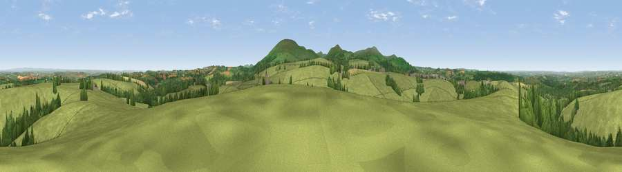

Viewpoint near Sticklepath
#9609 in England · top 12% of its area beats it · near SticklepathWhere it is
The exact computed spot (SX 62600 96275). Click the marker for map links.
The view, rendered

A 360° render of this exact spot computed from the terrain model, tree cover and land cover — summer colours, afternoon light, calibrated against photographs of famous viewpoints. Real trees, hedges and buildings will differ in detail.
The panorama
Grey silhouette: terrain skyline in each direction (720 bearings, Earth curvature and refraction included). Dashed green: skyline with trees (+15 m) and buildings (+8 m) as obstacles. Blue strip: how far the ground is visible on each bearing.
Where the view opens
Wedge length = distance to the farthest visible ground on that bearing (vegetation-aware). Rings at 10, 25 and 50 km.
What fills the view
83% grassland · 12% woodland · 4% cropland ·
Angular shares of the visible panorama (visual magnitude), not map area. Landscape diversity 0.25 (0–1 Shannon).
Key numbers
More beautiful places nearby
The staircase of upgrades: each row has a higher view potential than everything closer. Driving times are estimates from straight-line distance, calibrated against real road routing — check an actual route before setting out.
| Place | Direction | Drive | Score |
|---|---|---|---|
| Viewpoint near Sticklepath | SSE · 3 km | ~8 min | 73.5 |
| Viewpoint near South Zeal | SSE · 5 km | ~10 min | 75.0 |
| Yes Tor | SW · 8 km | ~15 min | 78.5 |
| Viewpoint near North Bovey | SE · 17 km | ~30 min | 79.3 |
| Cairn | SE · 22 km | ~37 min | 79.8 |
| Viewpoint near Haytor Vale | SE · 23 km | ~38 min | 80.1 |
| Viewpoint near Buckland in the Moor | SSE · 26 km | ~41 min | 80.7 |
| Viewpoint near Dousland | SSW · 27 km | ~44 min | 81.0 |
50.74977, -3.94904 · source: screening · position refined by local search. Computed location — check access rights before visiting.